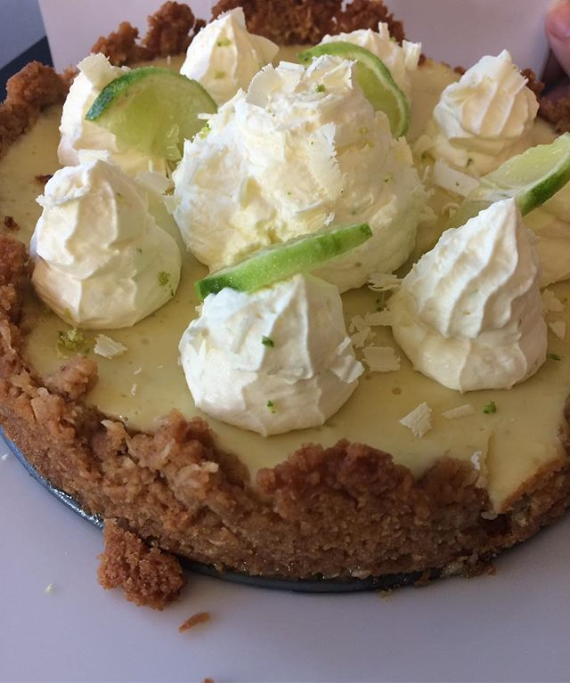

Mängd:
1 cheesecake
Du behöver:
Botten:
- 150 g rumstempererat smör
- 300 g digestivekex
- 70 g kokosflingor
Fyllning:
- 6 st gelatinblad
- saft och finrivet skal av 3 st lime
- saft och finrivet skal av 1 st citron
- 600 g rumstempererad naturell färskost av cream cheese-typ
- 770 g kondenserad mjölk
- 2 1/2 dl vispgrädde
Dekoration:
- 1 st lime
- 1 st citron
- ätbara blommor
Gör så här:
Botten:
- Lägg bakplåtspapper i botten för att kakan ska bli lättare att ta ur.
- Smält smöret i en kastrull.
- Smula kexen fint, i en mixer eller genom att lägga dem i en plastpåse, knyta igen och kavla påsen.
- Blanda smöret, smulorna och kokosflingorna ordentligt och tryck ut massan i formen.
- Använd baksidan av en sked eller botten av ett glas för att få en jämn yta. Låt botten vila i kylen medan du gör fyllningen.
Fyllning:
- Lägg gelatinblad i kallt vatten i ca 10 min.
- Tvätta lime och citron och finriv skalet och pressa ut saften.
- Värm upp citron- och limesaften och smält gelatinet i saften. Låt svalna.
- Lägg rumstempererad färskost i en bunke och rör med gaffel tills den är mjuk och krämig.
- Rör ned den kondenserade mjölken och blanda väl.
- Blanda ned lime-, citronsaft och finrivna lime- och citronskal medan du rör om.
- Rör ned den vispade grädden. Häll smeten över botten och låt svalna i kyl i minst fyra timmar.
- Använd baksidan av en sked eller botten av ett glas för att få en jämn yta. Låt botten vila i kylen medan du gör fyllningen.
Dekoration:
- När fyllningen har stelnat, ta ur kakan ur formen och lägg den på ett serveringsfat. Dekorera med citron- och limeskivor och ätbara blommor.